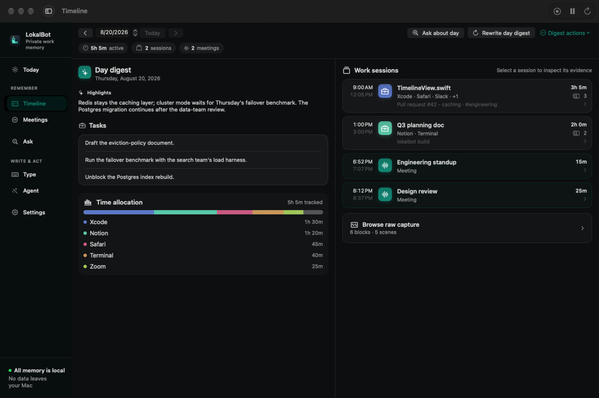

{kind=link}
{kind=link}
{kind=link}
09:12
The page
that clicked.
Find the useful detail in the app context you choose to keep.
App contextLokalBot
Pages, messages, conversations, passing ideas.
Keep the context. Pick up where you left off.
Free & open source · Apple Silicon · macOS 15+

01 / Remember
The useful parts of an ordinary day.
A page you found. A message you saved. An idea you talked through. Bring the useful parts of your work into one private memory.
09:12
Find the useful detail in the app context you choose to keep.
App context11:26
Mark a moment now. Come back to it when it matters.
Saved moments14:05
Recall the context of a message without retracing your day.
Captured text16:40
Keep a conversation and the next steps that came from it.
Conversations02 / Recall & carry on
You remember the idea.
LokalBot helps you find the rest.
Search across the context you’ve kept, return to the source, and put it back to work in a draft, a daily recap, or your next step.
With your memory on your Mac03 / Yours to keep
A personal tool should feel personal.
Right down to where your data lives.
Built-in AI runs on your Mac. Your library lives locally, ready to return to after the day is done.
Free, open-source software. No LokalBot account or subscription standing between you and your memory.
Review capture settings, grant the permissions you want, and control what you keep.
Initial model downloads and updates need a connection. Optional remote inference and network-capable Agent Mode commands require your approval. Read the privacy details.
Make a little room for what’s next.
Free & open source · Apple Silicon · macOS 15+
Models download during setup. Installation help ↗